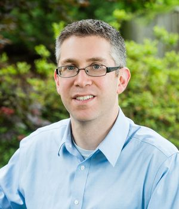

CV/Résumé for Byron Katz
email: byronka@msn.com
phone: 240-463-0643
“I'm not a great programmer; I'm just a good programmer with great habits.”
- Kent Beck
Quick summary
-
2002 graduate of University of Tennessee, with a degree in architecture (bachelor of architecture five year degree). Became licensed as an architect.
-
Hired as software tester in 2010 at National Cancer Institute. Became lead QA within four months.
-
Hired as developer at Thycotic Software in 2012; worked at 4 other companies as developer and consultant since then.
I have been in love with computers since my father bought the family a
Commodore 64 in the eighties. I have diverse experience, having been an
architect, an entrepreneur, a software tester, a trainer, and a developer.
Mission statement
- Mentor staff in world-class quality-oriented development techniques
- Contribute to building reputation for company as bright beacon for innovation and excellence
- Explore innovative approaches
- Build a culture of psychological safety and joy
I have experience at software firms ranging from start-ups to large
enterprises to government projects. My primary project experience
has been as a full-stack developer of multi-tier web projects in
Java and .Net, but most recently I have had the opportunity to teach
best practices in software development and testing. I enjoy making
valuable concepts accessible to a larger audience, and I want
to persuade others that the costs of quality, simplicity, and beauty
pay for themselves in the long run.
My characteristics
- I have written hundreds of thousands of lines of code.
- I am committed to quality.
- I love programming, and love to work with others who do.
- I believe pair programming with test-driven development is the best practice
- I believe deep understanding makes it possible to explain complex ideas in simple terms.
- I believe that software development is more a function of social aspects than technical concepts
Current location: Virginia suburbs near Washington, D.C.
Portfolio of work
Demo - a demonstration of good development practices - including TDD, BDD, and quality
https://github.com/7ep/demo
R3z - A corporate timekeeping application, built using TDD/BDD
https://github.com/7ep/r3z
Github - Personal work
https://github.com/byronka
Questions on which I have proposed some answers
https://stackoverflow.com/users/713809/byron-katz
Personal ramblings
http://renomad.com/
A discussion I held on agile:
https://youtu.be/FsW8LWwtpcM
... and on minimum viable product:
https://youtu.be/dR6RLkcMGHs
... and on how I teach/present:
https://youtu.be/69ncONUSZf0
How Git bisect works
https://youtu.be/QSh4Ble37yk
Projects
Property Product Suite, CoStar
A web portal providing brokers and vendors access to a large commercial real estate database.
Reporting system, CoStar
A feature provided by Property Product Suite that provides reports on real-estate data.
Deal Maker Digital, Invision Inc.
A web application to help Dish and DirecTV salespeople sell advertising.
Secret Server, Thycotic
A web application that manages account access information such as passwords and usernames.
Password Reset Server, Thycotic
A web application that provides capability to reset passwords without needing to involve help desk.
Group Management Server, Thycotic
A web application that provides restricted functionality over Active Directory groups, such as moving
users between groups.
REAP, Renaissance Nomad Software
An Android app to analyze residential real estate investments.
Favrcafe, Renaissance Nomad Software
A website to trade favors and build reputation points.
Programming languages I have played with
(in alphabetical order)
- Ada *
- (x86) Assembly
- Basic - Apple ][e (or is it //e?) and Commodore 64 flavors
- C
- C++
- C# **
- Haskell
- Java **
- JavaScript **
- Kotlin **
- Lisps (Scheme and Common Lisp) *
- Pascal
- Python *
- Rust *
- SQL (multiple flavors - TL-SQL, PostgreSQL, MySql (MariaDB)) **
Note:
Zero stars means scant use or several years since last use.
One star indicates beginner comfort and recent use.
Two stars indicates professional use.
Companies I have worked for
Def Method 2021-present, a software consultancy based in New York City
-
Provided feature development at Dick's Sporting Goods, on a technology stack of a React and Angular front-end and a Kotlin and Java back-end.
-
Initiated a bi-weekly discussion over issues encountered during consulting.
Coveros 2017-2021, a software consultancy in Virginia suburbs outside Washington D.C.
-
Taught and coached in modern software development practices to groups ranging from private individuals to some of the largest international organizations. Topics included: modern agile engineering, test-driven development, behavior-driven development, test automation and proper testing practices.
-
Developed software used as a teaching material and reference for best practices, found at https://github.com/7ep/demo
-
Ran an internal teaching initiative ("The lab") to improve the abilities of the consultants in innovative software development techniques
-
Demonstrated value of careful refactoring, addition of unit tests, and comments on legacy code. Doing so uncovered multitudes of long-standing defects.
-
Rewrote portion of code in Healthcare.gov that generated data for reports. While doing so, took the time to become familiar with the domain, thereby discovering undefined requirements which led to greater precision from stakeholders.
-
Involved with first development efforts on a new healthcare provider registration system for Medicare, called PECOS 2.0. Provided considerable technical guidance and mentoring in the subject areas of team process, data modeling, code quality, and devops.
-
Refactored the data provisioning system to be independent of the main application, to allow greater versatility in different stages, as well as during the development cycle.
CoStar 2015-2017, the world's leading database of commercial real estate data
title: Senior Developer
-
One of the pages was taking up to a minute to render using old, sluggish XML-XSLT technology. Rewrote using KnockoutJS and MVC RESTful endpoints, causing average page loads to
take less than a second, and for client-side sorting actions to be near instantaneous.
-
In a series of lectures and workshops, taught Git to team.
-
Researched techniques for rewriting our client-controlled report generator. After thoughtful vetting of many alternatives, suggested using HTML-to-PDF rendering for templated HTML. This is now used on all new reports.
-
Assisted systems team in starting to use Red Hat Enterprise Linux.
-
One of the tools that we use for performance analysis indicated that there were many opportunities for improvements in our SQL queries. Two of us analyzed a variety of queries, taking them apart and rebuilding, to see where we could find optimizations for speed while maintaining correctness. We sped up the system 33%.
-
Demonstrated the benefits of adding thoughtful comments throughout the code base to illuminate the way for maintenance programmers.
Invision 2014-2015, provided software for ad sales at Dish and DirecTV
title: Senior Developer
-
Provided full-stack maintenance and development of new functionality
Thycotic Software 2012-2014, provides secure account management software
title: Senior .Net Consultant
-
Designed, implemented, revised, and refactored much of the business logic layer using pair programming, test-driven development, and other XP practices
-
Realized there was a need for storing secure web account information and made the case to the product owner successfully.
-
Responsible for demonstrating products to potential customers.
-
Developed algorithm to search large encrypted text. This was quite involved. Since the encrypted text could be very large, the outcome was an algorithm that searched using a small window.
-
Rewrote main CSV parser - code was simplified and corrected, and only half the lines of code turned out to be necessary.
-
Brought to the fore several previously unconsidered critical security concerns.
-
Corrected bugs in existing native applications for iPhone and Android.
Ekagra Software 2010-2012
title: QA Lead, contractor to National Cancer Institute at the Center for Bio-informatics
-
Reported project status on weekly stakeholder meeting. Prepared monthly process reports on
project and QA activity. Reviewed target goals, priorities, and QA standards with stakeholders.
-
Rose to team lead after four months, due to my communication and technical skills, and my
passion for quality software. Became responsible for tasking 5 QA engineers.
-
Developed a variety of software tools to support work, such as one to analyze differences
between Java property files.
-
Built security-hardened Linux nodes on virtual machines for environment testing.
Katz and Sons, architects 2009-2010
title: entrepreneur, architect, sales, marketing, accounting
-
Marketing
-
Financial and accounting
-
Architectural design, drafting, and specifications
-
IT and website management
-
Networking
-
Communication with vendors, clients, and consultants
-
Design types: residential and remodeling
Portman Architects 2005-2009
title: staff architect
Architectural design and assistant project manager during design and construction of $300 million Hilton Bayfront Hotel in San Diego
-
Coordination with consultants and contractors
-
Point of contact for all requests for information
-
Code analysis
-
Creation and drafting of functional and aesthetic design and detailing
-
Site review
-
Permit process assistance to developer
-
Design types: 1200 room convention hotel, university library, podium levels of high rise tower.
During the San Diego Hilton project, I developed an excellent rapport
with all consultants and the Contractor and Owner, resulting in
-
a greater number of successful actions between all parties
-
improved efficiency in the Request For Information (RFI) process
-
timelier responses from all parties
-
greater effort from all associated parties to assist as a team,
resulting in less effort and time required by the Architect. This
greater efficiency led to less time required for all tasks and increased
quality of work.
Developed unusual details, taking into account multiple avenues of
research and consultation. Emphasized low-maintenance, longevity, and
durability in design.
For example, I detailed the steam room in the
spa. This required intensive research in tile details, waterproofing
details, and steam machine details, as well as reviewing the
specifications and consulting with a waterproofing consultant. The
result was a set of drawings which included all necessary provisions to
build a steam room which would work for a long time with low
maintenance.
In another instance, I designed a "hidden" door behind the
front reception desk which had unusual constraints: It was curved, was
on a smoke and fire barrier, had to have electronic security, and was
intended to conceal itself by blending in with the rest of the wall..
This required research and consultation with the General Contractor and
sub-contractors, our door consultant, security consultant, and
electrical consultant, as well as the Owner. In the end, we had built a
door which successfully blended in with its surroundings and solved all
of the problems within budget
Tunnell, Spangler, Walsh 2004-2005
title: Architectural designer and draftsman
-
Coordination with consultants and contractors
-
Code analysis
-
Functional and aesthetic design and detailing
-
Design types: 250-unit condominium, community pavilion, detached residences, mixed-use development
Peacock Partnership 2003-2004
title: designer
-
Coordination with consultants and contractors
-
Code analysis
-
Functional and aesthetic design and detailing
-
Design types: Hospital and medical build-out
Commendations
You’ve brought the Common Purpose to life by improving teammates’ and athletes’ experiences ordering custom golf equipment through the delivery of TeeBox. ... we have seen a positive reduction in the number of custom orders cancellations and have made teammates’ jobs easier. Additionally, you have been a foundational pillar for the positive onboarding of the entire engineering team in the custom products space. Your actions and contributions have not gone unnoticed. Thank you again for all you’ve done for our team and company. You are a valued teammate!
- Jason Guttman, technical manager at Dick's Sporting Goods
Technically: this project has been a joy to work on. Fearless experimentation and inquisition has led us in unexpected directions, not always fruitful to the source code but always helpful to my understanding. This has been a great experience for both learning Kotlin and internalizing the norms of test-driven development.
Interpersonally: Ideas lead. Never once have I felt pressured by the authority of seniority or expertise, and the result has been a welcoming and safe atmosphere that makes me feel more confident in my skills as a coder and a learner. Speaking personally, your confidence (Byron) that we can create something truly excellent is infectious, and something I didn’t know I was missing before.
- Mitch Hardee, junior developer at Coveros, speaking about work on the "Lab" initiative
Byron seems to be able to strike the delicate balance of listening, thinking, and suggesting smart
solutions to problems. He seems to be intent on leveling up our team members. Whether it’s introducing new development tools such as Vi or other *nix commands, or going deep on Git and then
teaching the rest of us what he learned, he seems to want to share his knowledge for the betterment
of his peers. This philosophy is infectious and I would expect that other team members will be
following his lead in learning a topic and teaching others.
He successfully delivered the rework of the Property survey page. As simple as that page may seem,
it has a large set of small features that needed to be re-worked. The rework of the survey page had
a dramatic effect on a number of user’s experiences as previously, this page took minutes to render
for clients with large survey lists. Now it takes a couple of seconds at most.
I would like to see Byron contribute to a large effort such as the reconceptualization of our web
application structure. I’m not sure if Byron could lead this effort or simply contribute, but his way
of thinking would guarantee a positive contribution.
Byron uses probably the most diverse set of tools on the team. Understands multiple tool chains
including *nix based and leverages those as needed to optimize his workflow. Probably, if given time
and given the opportunity, he would vastly improve the core product workflow.
- Joel Rumerman, manager at CoStar Group
I highly recommend Byron Katz as a candidate for employment. Byron and I worked on the same
team at the NCI Center for Bioinformatics. Byron’s technical ability and contribution was very
strong and coupled with his resourcefulness and unwavering persistence he set himself apart from
all of his peers. He was not only affable, but extremely reliable and was adept with working with all
levels - from technical colleagues to senior leadership. Byron would be a tremendous asset to any
organization and has my highest recommendation.
- Steve Young, colleague at NCI
Byron has excellent communication skills, has solid working relationships and is extremely organized and detail oriented. I was able to rely on him in completing his assignments from typical to
complex technical issues in a timely manner using good judgment with sound decisions and recommendations. He takes great pride in his work.
- Greg Botsch, manager while at John Portman and Associates
Certifications
ICAgile Certified Professional
ICAgile Certified Professional - Agile Testing
ICAgile Certified Professional - Agile Test Automation
ICAgile Certified Professional - Agile Programming
ICAgile Certified Professional - Foundations of Devops
ISTQB - Certified Foundation Level
ASTQB - Mobile Application Tester
ISTQB - Certified Advanced Level Test Manager
ISTQB - Certified Advanced Level Test Analyst
NCARB
Licensed architect in Georgia (expired)
Education
University of Tennessee, Knoxville
Bachelor of Architecture, 2002
Barcelona study-abroad program, 2001
Company details
Def Method, Inc.
defmethod.com
336 W 37th St.
Suite #335
New York, NY 10018
(212) 256-1460
info@defmethod.com
Coveros, Inc.
coveros.com
4000 Legato Road
Suite 1100
Fairfax, Virginia 22033
+1 929.341.0139
info@coveros.com
CoStar Group
costar.com
Headquarters Telephone: 800-204-5960
Washington, DC
Invision
(defunct)
Thycotic Software
thycotic.com
https://thycotic.com/about-us/contact/
Washington, DC
Portman Architects
https://portmanarchitects.com/
Atlanta, GA
Tunnell, Spangler, Walsh
https://www.tsw-design.com/
Atlanta, GA
Peacock Partnership
https://www.peacockpartnership.com/
Atlanta, GA
Current references available on request.